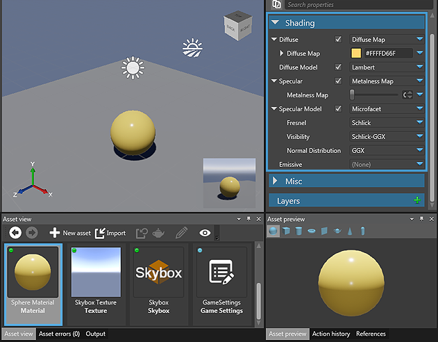
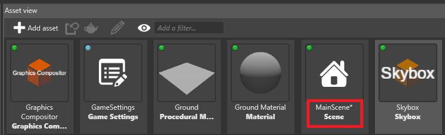
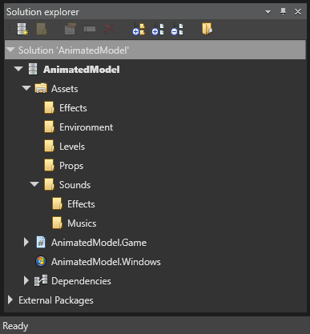
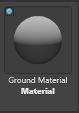

アセットの管理
初級
このページでは、アセットを編集および管理する方法について説明します。
Property grid でアセットを編集する
ほとんどのアセットは Property grid を使用して編集できます。既定では、Property grid は Game Studio の右上にあります。
たとえば、マテリアル アセットの色を変更するには次のようにします。
［Asset view］(既定では下部) で、マテリアルを選択します。

Property grid の［Shading］>［Diffuse］で、［Diffuse Map］の横にある色付きのボックスをクリックします。このボックスには、アセットの色が表示されています (この例では黄色)。
［Color picker］が開きます。

アセットの新しい色を選択します。
［Asset preview］(既定では右下) に、アセットの変化がリアルタイムで表示されます。
［Asset view］では、変更が保存されていないアセットはアスタリスク (*) で示されます。

専用エディターを使用してアセットを編集する
Game Studio には、次のアセットの種類に対する専用のエディターがあります。
- プレハブ
- シーン
- スプライト シート
- UI ページ
- UI ライブラリ
- スクリプト
たとえば、シーンを編集するにはシーン エディターを使用します。

これらの種類のアセットの専用エディターを開くには、次のいずれかの方法を使用します。
- アセットをダブルクリックします
- アセットを右クリックして、［Edit asset］を選択します
- アセットを選択して、Ctrl + Enter キーを押します
アセットを整理する
種類別のサブフォルダーにアセットを整理することをお勧めします。このようにすると、プロジェクトの管理が容易になります。プロジェクトが大きくなったときは特にそうです。

アセットは、プロジェクト パッケージの［Assets］フォルダーに格納されています。プロジェクトは［Solution explorer］(既定では左下) で確認できます。
- サブフォルダーを作成するには、親フォルダーを右クリックして［Create subfolder］を選択します。
- アセットを移動するには、［Asset view］でアセットを選択し、それをフォルダーにドラッグ アンド ドロップします。
Note
アセットを移動すると、そのアセットの内部にある他のアセットへの参照がすべて更新されます。
Tip
アセットの URL と種類を表示するには、アセットのサムネイルをマウスでポイントします。

ビルドにアセットを含める
既定では、ゲームをビルドするときにすべてのアセットは含まれません。これは、実行時に必要のないアセットがあるためです (たとえば、アセットが不完全な場合)。
次のアセットだけが組み込まれます。
- ユーザーが含めるように明示的に指定したアセット (ルート アセット)
- ルート アセットによって参照されているアセット
Game Studio では、アセットが含まれるかどうかが、アセットのサムネイルの左上に色付きのアイコンで示されます。
| 色 | ステータス |
|---|---|
| 青  |
アセットはルート アセットであり、ビルドに含まれます。 |
緑  |
アセットはルート アセットによって参照されており、ビルドに含まれます。 |
グレー  |
アセットはビルドに含まれません。 |
スクリプトを使用して実行時にアセットをロードする場合は、アセットをルート アセットにする必要があります。そのためには次のようにします。
サムネイルの左上にあるグレーのドットをクリックします
アセットを右クリックして［Include in build as root asset］を選択します。

Asset view のオプション
［Asset view］のオプションを変更するには、［Asset view］のツール バーにある目のアイコンをクリックします。

次のことが可能です。
- 選択したフォルダーのみ、または選択したフォルダーおよびサブフォルダーのアセットを表示します
- 名前、種類、保存されていない変更、および変更日によって、アセットを並べ替えます
- タイル ビュー (既定) とグリッド ビューを切り替えます
アセットをフィルターする
［Asset view］(既定では下部) でアセットを表示するときに、名前、タグ、種類、またはこれら 3 つの組み合わせで、アセットをフィルターできます。
タグと名前のフィルターは、"and" フィルターです。たとえば、tag:level と name:knight でフィルターすると、［Asset view］にはタグが "level" かつ名前が "knight" のアセットだけが表示されます。
種類フィルターは、"or" フィルターです。たとえば、type:animation と type:texture でフィルターすると、［Asset view］にはアニメーションまたはテクスチャのアセットだけが表示されます。
フィルターを追加する
［Asset view］で、フィルター バーに入力します。
一致するフィルター (名前、種類、タグ) のリストが表示されます。
名前でフィルターするには、Enter キーを押します。
タグまたは種類でフィルターするには、ドロップダウン リストでタグまたは種類のフィルターを選択します。
フィルターが適用されて、一致するアセットが［Asset view］に表示されます。
複数のフィルターを追加できます。名前フィルターは緑、タグ フィルターは青、種類フィルターはオレンジです。
フィルターのオンとオフを切り替える
フィルターを削除しないでフィルターのオンとオフを切り替えるには、フィルターをクリックします。無効のフィルターは暗色になります。

フィルターを削除する
フィルターを削除するには、フィルター タグの X アイコンをクリックします。